WGCNA+cytoscape构建基因表达模块网络图
原文：https://mp.weixin.qq.com/s?__biz=MzAwMzIzOTk5OQ==&mid=2247499271&idx=1&sn=69ae605ffe6fe60925ed144c88b8803b&chksm=9b3c8757ac4b0e41ca67ce8fb023ca849da7cbe828a7d3116bdcd96d2a9c9b6293c010cc7465#rd 合集：粉丝来稿
写在前面
WGCNA的基础教程可见此前教程：一文学会WGCNA，此教程衔接WGCNA的计算与cytoscape的联用构建基因表达模块并以网络图的形式进行可视化。
测试数据：
https://pan.baidu.com/s/1r1IIJB2EZY5mlbY-AMnrAA?pwd=pbkj
suppressMessages(if(!require(WGCNA))BiocManager::install("WGCNA"))
suppressMessages(if(!require(graphics))BiocManager::install("graphics"))
suppressMessages(if(!require(stringr))BiocManager::install("stringr"))
options(stringsAsFactors = FALSE)
enableWGCNAThreads(nThreads = 8)
## Allowing parallel execution with up to 8 working processes.
setwd('/home/jiangxinyu/R/R_script/Experience_note/WGCNA')
Read Data
读取bulk-RNAseq表达矩阵 28850个基因 30个样本，为方便计算，取高表达前5000个基因
dataExp <- read.delim('WGCNA-master/data/All_fpkm.list',header=T,row.names = 1,sep="\t",na.strings = "-")
dim(dataExp)#28850个基因 30个样本
## [1] 28850 30
head(dataExp)
## X1462 X303WX X81162 CIMBL119 CIMBL137
## AC205376.4_FG003 0.25024030 0.2703482 0.2026736 0.04548679 0.38055073
## GRMZM2G024563 24.00755024 41.8323644 26.7356270 32.48955900 25.51386154
## GRMZM5G809265 9.07819657 8.6482349 9.0453761 8.44270997 7.74557661
## GRMZM2G005155 1.84960223 1.4510925 NA 0.50431010 0.07534195
## GRMZM2G111923 11.26126179 10.5911927 7.3804634 12.18774491 11.71727062
## GRMZM2G163956 0.03672591 NA NA 0.03337880 NA
## CIMBL66 CIMBL69 CIMBL83 CML171 CML432
## AC205376.4_FG003 0.1001027 0.3967628 0.12274275 0.1134132 0.1717395
## GRMZM2G024563 12.0375471 19.8688956 33.48308037 30.6640570 31.5721064
## GRMZM5G809265 13.9771229 10.8603828 7.40415943 12.6621287 10.6133293
## GRMZM2G005155 0.8455883 1.3615617 0.04860155 0.1496913 0.2380085
## GRMZM2G111923 9.9818855 10.8993301 9.19361516 22.1924239 8.1573689
## GRMZM2G163956 NA NA NA NA 0.8979257
## DONG237 GEMS1 GEMS17 GEMS18 GEMS33
## AC205376.4_FG003 0.3609156 0.09590174 0.17786360 0.26644808 0.3857794
## GRMZM2G024563 17.6509800 21.83251347 16.12629927 13.02703894 30.7576793
## GRMZM5G809265 5.4132365 6.29072555 7.54794839 5.66483158 16.1311769
## GRMZM2G005155 0.4763638 0.92402216 0.62915104 0.78775953 0.4709923
## GRMZM2G111923 10.0733160 6.80358407 10.17039964 6.71735487 13.1850170
## GRMZM2G163956 NA 0.01759348 0.03915558 0.07820922 NA
## GEMS39 GEMS4 GEMS49 GEMS61 HTH.17
## AC205376.4_FG003 0.6037110 0.1054326 0.1835102 0.0396259 0.1076553
## GRMZM2G024563 17.1051454 18.3056272 19.7397901 18.2770602 20.6068082
## GRMZM5G809265 9.2019740 5.5594095 17.5529977 5.3657198 10.8763899
## GRMZM2G005155 1.0624314 0.9880210 1.5380374 0.6799164 0.1847191
## GRMZM2G111923 12.7078466 10.7220199 12.8930955 11.1482429 11.6364121
## GRMZM2G163956 0.1624374 0.1160517 NA NA 0.1184983
## HYS K22 S37 SHEN5003 SI434
## AC205376.4_FG003 0.56290013 0.5047354 NA NA 0.2129986
## GRMZM2G024563 14.80521887 34.9811135 19.58408384 12.4784361 49.4726328
## GRMZM5G809265 9.37934088 13.3556190 12.67731937 10.0313504 6.5141622
## GRMZM2G005155 0.03714791 1.5382886 0.05242181 0.4303044 0.2108487
## GRMZM2G111923 13.05424213 3.8420155 12.13331742 6.8317988 3.8425578
## GRMZM2G163956 NA 0.8754468 0.87435053 NA NA
## W138 WH413 XI502 YE8001 ZH68
## AC205376.4_FG003 0.1608475 0.1543717 0.2833750 0.08157338 0.32354525
## GRMZM2G024563 23.6699383 19.1483705 16.2819831 21.71496026 5.60381802
## GRMZM5G809265 8.1195401 4.6072093 7.8655912 3.68193495 16.29998248
## GRMZM2G005155 0.2547585 0.7640679 0.2244119 0.08613338 1.26891747
## GRMZM2G111923 11.1661787 19.2006110 11.8550584 6.30866606 9.73864296
## GRMZM2G163956 0.0196720 NA NA 0.01496490 0.03391739
dataExp = t(dataExp[order(apply(dataExp,1,mad), decreasing = T)[1:5000],])
dim(dataExp)#5000个基因 30个样本
## [1] 30 5000
head(dataExp[,1:6])
## GRMZM2G397687 AF546188.1_FG007 GRMZM2G008341 GRMZM2G044625
## X1462 19069.27 22183.55 17371.98 25090.00
## X303WX 8054.09 37294.93 20743.09 11807.73
## X81162 19029.30 22943.01 21100.24 33375.12
## CIMBL119 17181.50 22934.52 17866.53 25667.85
## CIMBL137 42867.88 27130.62 27365.45 34608.31
## CIMBL66 37772.04 31909.86 33235.93 15059.99
## AF546188.1_FG005 GRMZM2G346897
## X1462 18076.65 16701.3957
## X303WX 27631.84 4922.4048
## X81162 15440.99 15048.1491
## CIMBL119 1792.17 8279.4260
## CIMBL137 22864.46 604.5375
## CIMBL66 29154.02 23835.9765
检查缺失值和离群样本
# 检查缺失值太多的基因和样本
#dataExp <- t(dataExp)
gsg = goodSamplesGenes(dataExp, verbose = 3);
## Flagging genes and samples with too many missing values...
## ..step 1
gsg$allOK
## [1] TRUE
#若返回False 则执行以下
if(!gsg$allOK)
{
#(可选)打印被删除的基因和样本名称:
if(sum(!gsg$goodGenes)>0)
printFlush(paste("Removinggenes:",paste(colnames(dataExp)[!gsg$goodGenes], collapse =",")));
if(sum(!gsg$goodSamples)>0)
printFlush(paste("Removingsamples:",paste(rownames(dataExp)[!gsg$goodSamples], collapse =",")));
#删除不满足要求的基因和样本:
# datExpr0 = datExpr0[gsg$goodSamples, gsg$goodGenes]
}
dim(dataExp)
## [1] 30 5000
#head(dataExp)
聚类做离群样本检测
sampleTree = hclust(dist((dataExp)), method ="average");
# dist()表示转为数值，method表示距离的计算方式，其他种类的详见百度
sizeGrWindow(12,9)
# 绘制样本树:打开一个尺寸为12 * 9英寸的图形输出窗口
# 可对窗口大小进行调整
# 如要保存可运行下面语句
# pdf(file="Plots/sampleClustering.pdf",width=12,height=9);
par(cex = 0.6) # 控制图片中文字和点的大小
par(mar =c(0,4,2,0)) # 设置图形的边界，下，左，上，右的页边距
plot(sampleTree, main ="Sample clustering to detectoutliers",sub="", xlab="", cex.lab = 1.5,
cex.axis= 1.5, cex.main = 2)
# 参数依次表示：sampleTree聚类树，图名，副标题颜色，坐标轴标签颜色，坐标轴刻度文字颜色，标题颜色
# 其实只要包括sampleTree和图名即可
# 绘制阈值切割线
abline(h = 70000,col="red"); # 高度15（根据自己的数据集，具体情况具体分析），颜色红色
# 确定阈值线下的集群
clust = cutreeStatic(sampleTree, cutHeight = 70000, minSize = 5)
# 以高度60000切割，要求留下的最少为10个（也是要根据自己的数据情况而定）
#table(clust) # 查看切割后形成的集合
# clust1包含想要留下的样本.
keepSamples = (clust==1) # 将clust序号为1的放入keepSamples
dataExp = dataExp[keepSamples, ]
# 将树中内容放入矩阵datExpr中，因为树中剩余矩阵不能直接作为矩阵处理
nGenes =ncol(dataExp) # ncol，crow分别表示提取矩阵的列数和行数
nSamples =nrow(dataExp)
#dim(dataExp)
#head(dataExp)
 hclust
hclust
自动构建网络及识别模块
网络拓扑分析 确定软阈值
# 设置软阈值调参范围
powers =c(c(1:10),seq(from = 12, to=20,by=2))
# 网络拓扑分析
sft = pickSoftThreshold(dataExp, RsquaredCut = 0.9,powerVector = powers, verbose = 5)
## pickSoftThreshold: will use block size 5000.
## pickSoftThreshold: calculating connectivity for given powers...
## ..working on genes 1 through 5000 of 5000
## Power SFT.R.sq slope truncated.R.sq mean.k. median.k. max.k.
## 1 1 0.0608 1.360 0.958 1080.000 1.06e+03 1750.00
## 2 2 0.0730 -0.674 0.945 358.000 3.37e+02 794.00
## 3 3 0.4260 -1.380 0.971 147.000 1.31e+02 424.00
## 4 4 0.6460 -1.740 0.982 69.100 5.83e+01 250.00
## 5 5 0.7240 -1.930 0.979 35.800 2.84e+01 156.00
## 6 6 0.7870 -1.970 0.988 19.900 1.48e+01 102.00
## 7 7 0.8230 -1.980 0.992 11.800 8.15e+00 69.20
## 8 8 0.8440 -2.000 0.993 7.280 4.65e+00 48.70
## 9 9 0.8560 -1.980 0.992 4.680 2.77e+00 35.30
## 10 10 0.8610 -1.990 0.988 3.110 1.69e+00 26.40
## 11 12 0.8670 -1.950 0.973 1.500 6.82e-01 15.50
## 12 14 0.9360 -1.840 0.996 0.787 3.02e-01 10.10
## 13 16 0.9470 -1.870 0.994 0.445 1.42e-01 7.67
## 14 18 0.9640 -1.850 0.991 0.267 6.98e-02 5.98
## 15 20 0.9700 -1.780 0.978 0.169 3.50e-02 4.76
# 绘图
sizeGrWindow(9, 5)
# 1行2列排列
par(mfrow =c(1,2));
cex1 = 0.8;
# 无标度拓扑拟合指数与软阈值的函数(左图)
plot(sft$fitIndices[,1], -sign(sft$fitIndices[,3])*sft$fitIndices[,2],
xlab="SoftThreshold(power)",ylab="ScaleFreeTopologyModelFit,signedR^2",type="n",
main =paste("Scaleindependence"));
text(sft$fitIndices[,1], -sign(sft$fitIndices[,3])*sft$fitIndices[,2],
labels=powers,cex=cex1,col="red");
# 这条线对应于h的R^2截止点
abline(h=0.90,col="red")
# Mean Connectivity与软阈值的函数(右图)
plot(sft$fitIndices[,1], sft$fitIndices[,5],
xlab="SoftThreshold(power)",ylab="MeanConnectivity", type="n",
main =paste("Meanconnectivity"))
text(sft$fitIndices[,1], sft$fitIndices[,5],labels=powers, cex=cex1,col="red")
#sft$powerEstimate
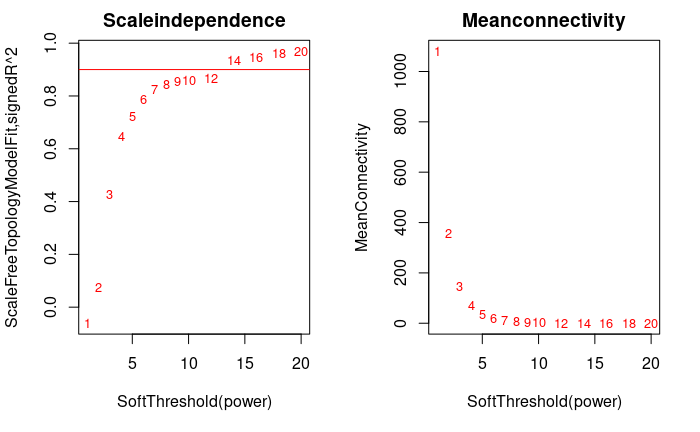
sft
构建网络识别模块
一步法构建共表达网络：实质上就是根据基因表达的相关性将相似表达的基因聚成一类称为一个module
cor <- WGCNA::cor#注意要用WGCNA内部的cor
net = blockwiseModules(
dataExp,
power = sft$powerEstimate, #软阈值，前面计算出来的
maxBlockSize = 6000, #最大block大小，将所有基因放在一个block中
TOMType = "unsigned", #选择unsigned，使用标准TOM矩阵
deepSplit = 2, minModuleSize = 30, #剪切树参数，deepSplit取值0-4
mergeCutHeight = 0.25, # 模块合并参数，越大模块越少
numericLabels = TRUE, # T返回数字，F返回颜色
pamRespectsDendro = FALSE,
saveTOMs = TRUE,
saveTOMFileBase = "FPKM-TOM",
loadTOMs = TRUE,
verbose = 3
)
## Calculating module eigengenes block-wise from all genes
## Flagging genes and samples with too many missing values...
## ..step 1
## ..Working on block 1 .
## TOM calculation: adjacency..
## ..will use 8 parallel threads.
## Fraction of slow calculations: 0.000000
## ..connectivity..
## ..matrix multiplication (system BLAS)..
## ..normalization..
## ..done.
## ..saving TOM for block 1 into file FPKM-TOM-block.1.RData
## ....clustering..
## ....detecting modules..
## ....calculating module eigengenes..
## ....checking kME in modules..
## ..merging modules that are too close..
## mergeCloseModules: Merging modules whose distance is less than 0.25
## Calculating new MEs...
cor<-stats::cor
table(net$colors)
##
## 0 1 2 3 4 5 6 7 8 9
## 3102 700 324 211 178 135 107 96 91 56
moduleLabels = net$colors
moduleColors = labels2colors(net$colors)
MEs = net$MEs;
geneTree = net$dendrograms[[1]];
# save(MEs, moduleLabels, moduleColors, geneTree,
# file="FemaleLiver-02-networkConstruction-auto.RData")
可视化模块
#sizeGrWindow(12, 9)
# 将标签转换为颜色
mergedColors = labels2colors(net$colors)
# 绘制树状图和模块颜色图
plotDendroAndColors(net$dendrograms[[1]], mergedColors[net$blockGenes[[1]]],
"Modulecolors",
dendroLabels = FALSE, hang = 0.03,
addGuide = TRUE, guideHang = 0.05,addTextGuide = TRUE)
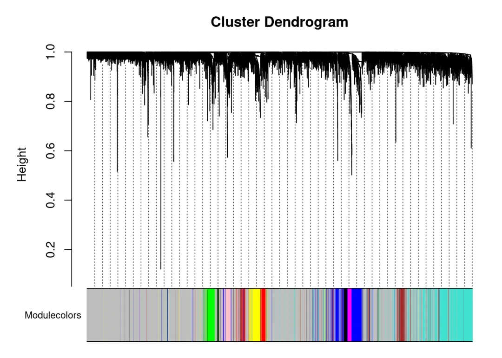
# module eigengene, 可以绘制线图，作为每个模块的基因表达趋势的展示
MEs = net$MEs
### 不需要重新计算，改下列名字就好
### 官方教程是重新计算的，起始可以不用这么麻烦
MEs_col = MEs
colnames(MEs_col) = paste0("ME", labels2colors(
as.numeric(str_replace_all(colnames(MEs),"ME",""))))
MEs_col = orderMEs(MEs_col)
# 根据基因间表达量进行聚类所得到的各模块间的相关性图
# marDendro/marHeatmap 设置下、左、上、右的边距
plotEigengeneNetworks(MEs_col, "Eigengene adjacency heatmap",
marDendro = c(3,3,2,4),
marHeatmap = c(3,4,2,2), plotDendrograms = T,
xLabelsAngle = 90)
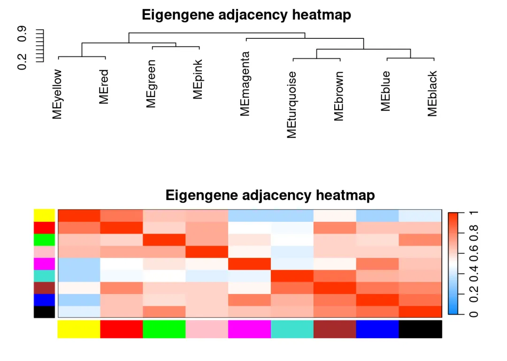
载入表型数据
allTraits<-read.delim('WGCNA-master/data/pheno.txt',header=T,sep="\t") #读取表型值
临床特征值热图
rownames(allTraits) <- rownames(dataExp)
sampleTree = hclust(dist(dataExp), method ="average")
# 重新聚类样本
traitColors = numbers2colors((allTraits[,2:3]), signed = FALSE);
# 将临床特征值转换为连续颜色:白色表示低，红色表示高，灰色表示缺失
plotDendroAndColors(sampleTree, traitColors,
groupLabels =names(allTraits)[2:3],
main ="Sample dendrogram and trait heatmap")
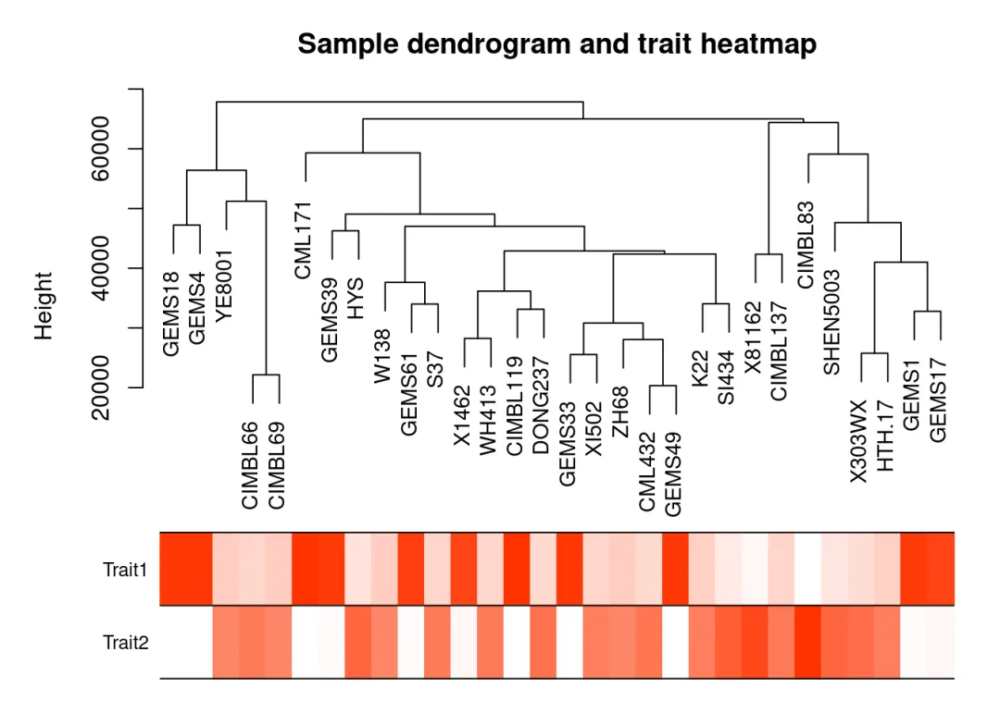
# 在样本聚类图的基础上，增加临床特征值热图
corType="pearson"
robustY = ifelse(corType=="pearson",T,F)
### 模块与表型数据关联
if (corType=="pearson") {
modTraitCor = cor(MEs_col, allTraits[2:3], use = "p")
modTraitP = corPvalueStudent(modTraitCor, nSamples)
} else {
modTraitCorP = bicorAndPvalue(MEs_col, allTraits[2:3], robustY=robustY)
modTraitCor = modTraitCorP$bicor
modTraitP = modTraitCorP$p
}
## Warning in bicor(x, y, use = use, ...): bicor: zero MAD in variable 'y'.
## Pearson correlation was used for individual columns with zero (or missing)
## MAD.
# signif表示保留几位小数
textMatrix = paste(signif(modTraitCor, 2), "\n(", signif(modTraitP, 1), ")", sep = "")
dim(textMatrix) = dim(modTraitCor)
Module-trait relationships
labeledHeatmap(Matrix = modTraitCor, xLabels = colnames(allTraits)[2:3],
yLabels = colnames(MEs_col),
cex.lab = 0.5,
ySymbols = colnames(MEs_col), colorLabels = FALSE,
colors = blueWhiteRed(50),
textMatrix = textMatrix, setStdMargins = FALSE,
cex.text = 0.5, zlim = c(-1,1),
main = paste("Module-trait relationships"))
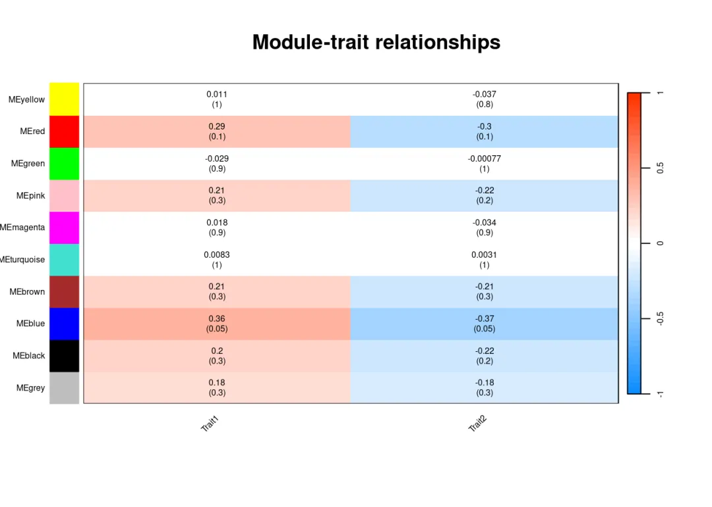
选择感兴趣的模块进行分析
## 从上图可以看到MEblue与trait1,trait2相关
## 模块内基因与表型数据关联
# 性状跟模块虽然求出了相关性，可以挑选最相关的那些模块来分析，
# 但是模块本身仍然包含非常多的基因，还需进一步的寻找最重要的基因。
# 所有的模块都可以跟基因算出相关系数，所有的连续型性状也可以跟基因的表达
# 值算出相关系数。
# 如果跟性状显著相关基因也跟某个模块显著相关，那么这些基因可能就非常重要
# 。
### 计算模块与基因的相关性矩阵
if (corType=="pearson") {
geneModuleMembership = as.data.frame(cor(dataExp, MEs_col, use = "p"))
MMPvalue = as.data.frame(corPvalueStudent(
as.matrix(geneModuleMembership), nSamples))
} else {
geneModuleMembershipA = bicorAndPvalue(dataExp, MEs_col, robustY=robustY)
geneModuleMembership = geneModuleMembershipA$bicor
MMPvalue = geneModuleMembershipA$p
}
# 计算性状与基因的相关性矩阵
## 只有连续型性状才能进行计算，如果是离散变量，在构建样品表时就转为0-1矩阵。
if (corType=="pearson") {
geneTraitCor = as.data.frame(cor(dataExp, allTraits[2:3], use = "p"))
geneTraitP = as.data.frame(corPvalueStudent(
as.matrix(geneTraitCor), nSamples))
} else {
geneTraitCorA = bicorAndPvalue(dataExp, allTraits[2:3], robustY=robustY)
geneTraitCor = as.data.frame(geneTraitCorA$bicor)
geneTraitP = as.data.frame(geneTraitCorA$p)
}
## Warning in bicor(x, y, use = use, ...): bicor: zero MAD in variable 'y'.
## Pearson correlation was used for individual columns with zero (or missing)
## MAD.
# 最后把两个相关性矩阵联合起来,指定感兴趣模块进行分析
module = "blue"
pheno = "Trait1"
modNames = substring(colnames(MEs_col), 3)
# 获取关注的列
module_column = match(module, modNames)
pheno_column = match(pheno,colnames(allTraits)[2:3])
# 获取模块内的基因
moduleGenes = mergedColors==module
sizeGrWindow(7, 7)
par(mfrow = c(1,1))
# 与性状高度相关的基因，也是与性状相关的模型的关键基因
verboseScatterplot(abs(geneModuleMembership[moduleGenes, module_column]),
abs(geneTraitCor[moduleGenes, pheno_column]),
xlab = paste("Module Membership in", module, "module"),
ylab = paste("Gene significance for", pheno),
main = paste("Module membership vs. gene significance\n"),
cex.main = 1.2, cex.lab = 1.2, cex.axis = 1.2, col = module)
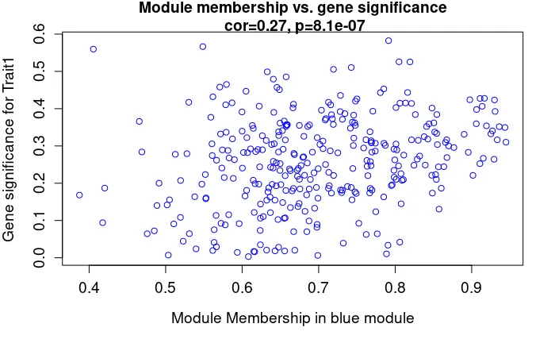
verboseScatterplot
导出网络用于Cytoscape可视化网络
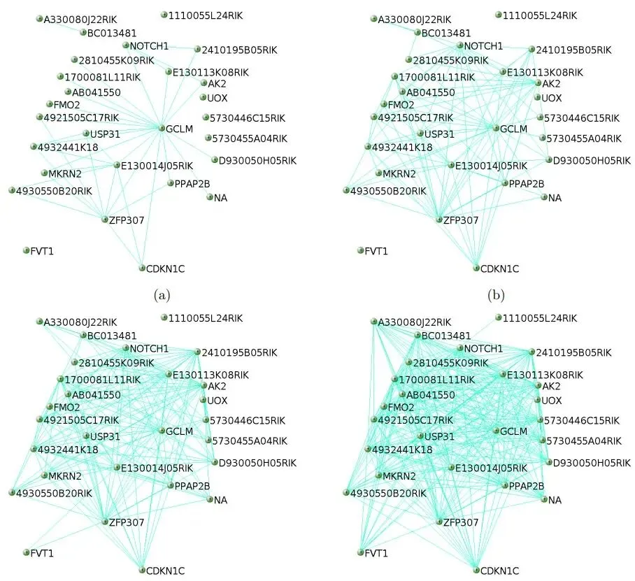
Cytoscape_network
Cytoscape download
-
Cytoscape是一个开源的软件平台，用于可视化分子相互作用网络和生物路径，并将这些网络与注释、基因表达谱和其他状态数据进行整合。虽然Cytoscape最初是为生物研究设计的，但现在它是一个复杂网络分析和可视化的通用平台。Cytoscape核心版提供了一套基本的数据整合、分析和可视化功能。
-
下载地址：https://cytoscape.org/
-
安装cytoscape需要java环境，目前最新版本为3.9支持的java环境有要求，可能需要重新下载规定版本的java。
Cytoscape import txt data
- 首先导入我们之前WGCNA分析后得到的两个用于cytoscape分析的txt文件。
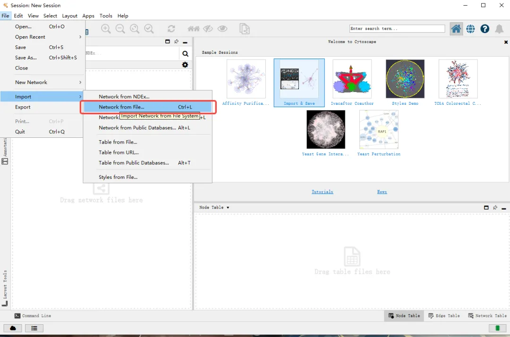
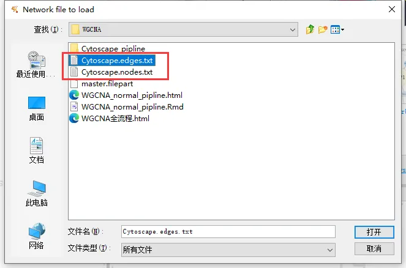
- 我们来看一下R中WGCNA导出的Cytoscape 两个txt文件 Cytoscape.edges.txt文件中包括了起始节点和目标节点的对应信息、相互作用形式信息，还有附加的临床性状和基因名等信息
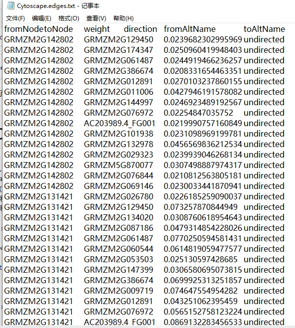
Cytoscape_import_txt_3
- Cytoscape.nodes.txt文件包含了节点的分组信息
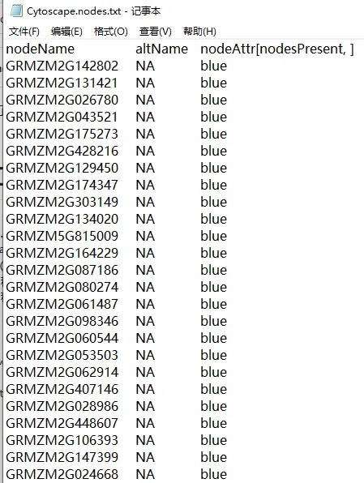
Cytoscape_import_txt_4
- 这里我们看到有缺失值，这是基因名的信息，有兴趣的可以在R中转化生成一下，重新导出
Advanced option中可以选择文件分隔符类型，这里我们是使用的默认TAB分隔。
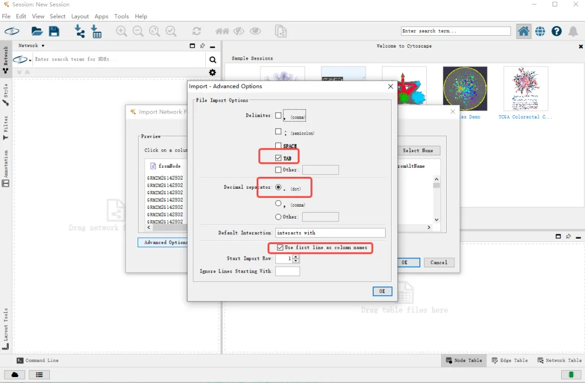
导入文件时要选择每列信息的类型和导入与否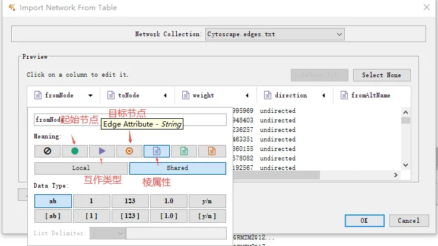
- 在导入文件时除了起始节点和目标节点之外，其他的信息都作为棱属性导入了，也可以将direction列作为互作类型进行导入
Visualize
- 为了方便数据展示，删除了其中一部分的节点信息使得图像不会过于复杂 首先在节点信息中选择一部分的节点信息，右键选中节点。
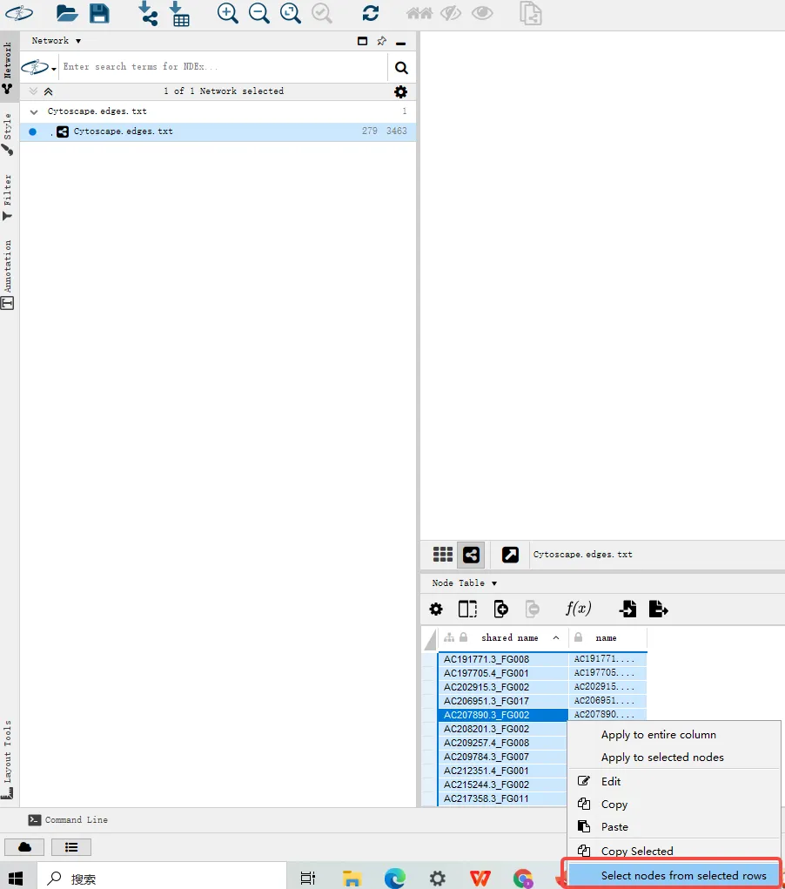
Cytoscape_vis_1
- 图中对应的节点会被选中（黄色），然后右键被选中的节点删除。
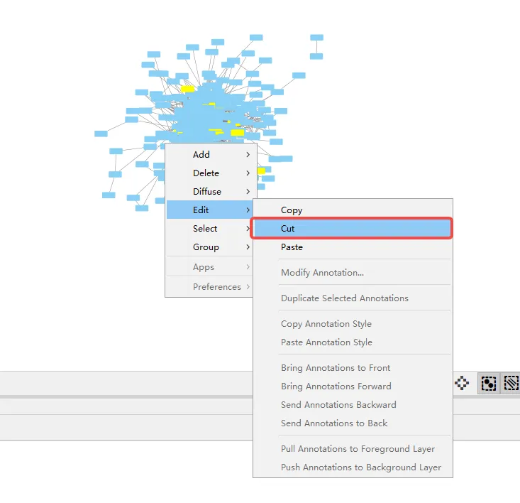
Cytoscape_vis_2
- 更新布局重新排布，也可以自动加手动去排布
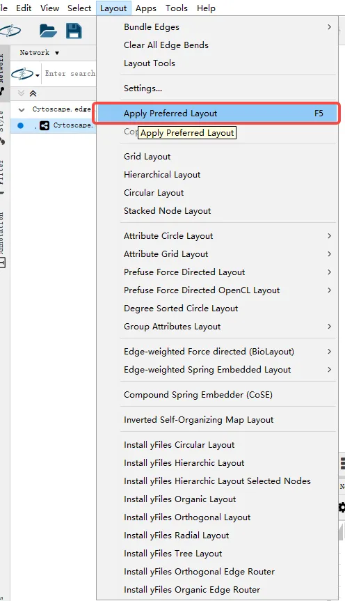
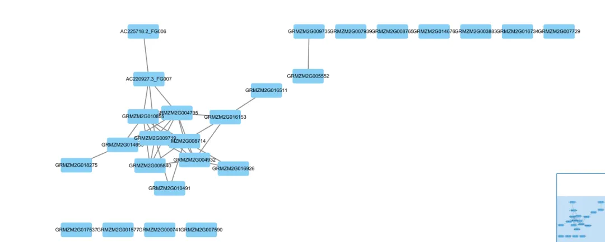
- 接下来我们对图像进行优化调整，首先在左边控制栏中的style选项卡中，可以选择预设的几种图象表现类型。下面的Node、Edge等选项卡可以分别调整对应的属性
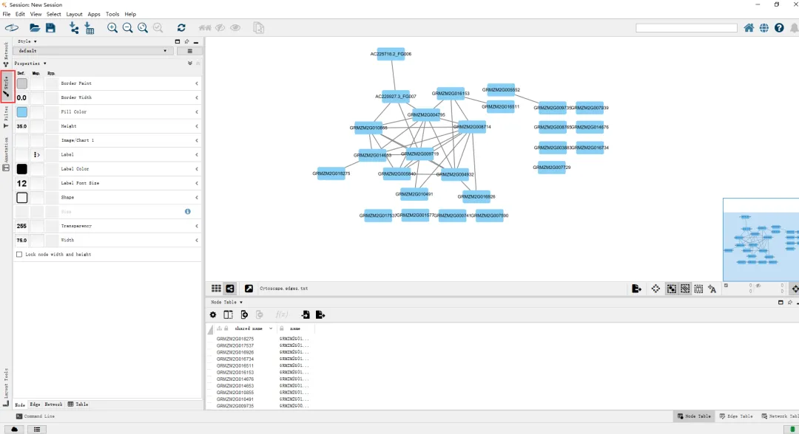
Cytoscape_vis_5
- 比如我们把节点的标签名用基因名来表示、根据节点类型来分别填充不同的颜色、添加分类变量以及添加一些自定义的图形等等，这些就靠自己DIY了。
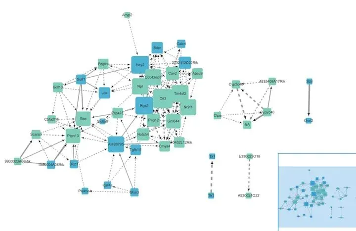
Cytoscape_vis_6

如何联系我们
 公众号后台消息更新不及时，超过48h便不允许回复读者消息，这里给大家留一下领取资料、免费服务器的微信号 ，方便各位随时交流、提建议(科研任务繁重，回复不及时请见谅)。此外呼声一直很高的交流群 也建好了，欢迎大家入群讨论：永久免费的千人生信、科研交流群
公众号后台消息更新不及时，超过48h便不允许回复读者消息，这里给大家留一下领取资料、免费服务器的微信号 ，方便各位随时交流、提建议(科研任务繁重，回复不及时请见谅)。此外呼声一直很高的交流群 也建好了，欢迎大家入群讨论：永久免费的千人生信、科研交流群
大家可以阅读完这几篇之后添加给生信入门初学者的小贴士 如何搜索公众号过往发布内容

 您点的每个赞和在看，我都认真当成了喜欢
您点的每个赞和在看，我都认真当成了喜欢